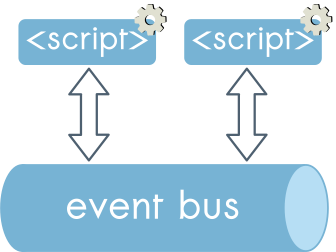

Microservices for the frontend
Maurizio Lupo @sithmel
About myself
Software engineer for TES Global
Tes Global is a digital education company that has been supporting educators for over 100 years. Tes is a community dedicated to supporting, inspiring and connecting educators everywhere; while Times Higher Education provides data and insights that drive excellence in the world’s leading universities
Our team
We love microservices
insert a picture here
Frontend integration
Frontend integration
Compoxure

Compoxure

Compoxure

Compoxure
performance and fallback
Compoxure
Compoxure

Compoxure
Compoxure
Compoxure debugger

Client side JS issue
- Namespace conflicts
- Common libraries
- Microservices communication
A good solution should:
- be performant!
- keep services independent
Issue 1: Namespace conflicts
add bundler images
...
<script async src="mservice1.js"></script>
...
<script async src="mservice2.js"></script>
Issue 2: common libraries

Easy solution Not!
<script src="react.js"></script>
...
<script async src="mservice1.js"></script>
...
<script async src="mservice2.js"></script>
- Service independence?
- Polluting global namespace
- Synchronous js problem
Performance: Synchronous js problem
Performance: Synchronous js problem
A different approach
async-define
async-define: define your dependencies
var React = require('react');
var ReactDOM = require('react-dom');
var asyncDefine = require('asyncDefine');
asyncDefine('react-16', function (){
return React;
});
asyncDefine('react-dom-16', function (){
return ReactDOM;
});
async-define: use your dependencies
var asyncDefine = require('asyncDefine');
asyncDefine(['react-16', 'react-dom-16'],
function (react, reactDOM){
... your code runs here ...
});
Importing the bundles
<script async src="react_ad.js"></script>
...
<script async src="mservice1_ad.js"></script>
...
<script async src="mservice2_ad.js"></script>
Keeping independence with duplications
...
<script async src="react_ad.js"></script>
<script async src="mservice1_ad.js"></script>
...
<script src="react_ad.js"></script>
<script async src="mservice2_ad.js"></script>
- An async-define dependency runs only once
- Many browsers load the same resource only once
- Compoxure removes duplicate libraries
Async-define
- no need to load dependencies synchronously
- no namespace pollution
- Multiple libraries version
Async-define
Use bundle plugins
- browserify
- webpack
- rollup
Async-define with webpack
const WPAsyncDefine = require('webpack-async-define');
module.exports = {
entry: './app.js',
externals: {
react: 'react-16',
'react-dom': 'reactdom-16'
},
plugins: [
new WPAsyncDefine()
],
output: {
filename: 'mservice1_ad.js'
}
};
Issue 3
Microservices communication
Solution: use an event bus
occamsrazor
Expose the bus in the global namespace
const or = require('occamsrazor');
window.eventBus = or();
occamsrazor
Subscribe an event
window.eventBus.on('login', (event, obj) => {
... do something when logged in ...
});
occamsrazor
trigger an event
window.eventBus.trigger('login', { username: 'Maurizio' });
occamsrazor
- lightweight
- ton of features
- broadcast across windows/iframes/tabs
- can bridge history API (pushstate, popstate)